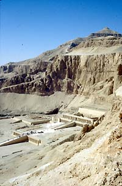

Department
of Ancient Egypt & Sudan >
Theban Workshop
|
|
 |
'Sacred Spaces and their function through Time'MONDAY, September 159:30 AM Registration
10:00 AM Welcoming remarks
10:10 AM Mohammed
el-Bialey (Supreme Council of Antiquities, Cairo),
10:45 AM Dimitri
Laboury (Université de Liège),
11:30 AM Coffee/tea break 12:00 noon Martina
Ullmann (University of Munich),
12:45 PM Lunch (please make your own arrangements) 1:45 PM Silke Grallert
(University of Bonn),
2:30 PM Brett McClain
(Oriental Institute),
3:15 PM Coffee/tea break
3:45 PM Christian
E. Loeben (Humboldt University, Berlin),
4:30 PM Peter Brand,
(University of Memphis),
5:15 PM Panel discussion
6:00 PM Reception
TUESDAY, September 16 10:00 AM Nigel
Strudwick (British Museum),
10:45 AM Boyo Ockinga
(Macquairie University),
11:30 AM Coffee/tea break 12:00 noon Harold
Hays and Will Schenck (Oriental Institute),
12:45 PM Lunch (please make your own arrangements) 1:45 PM Catharine
Roehrig (Metropolitan Museum of Art),
2:30 PM John Taylor
(British Museum),
3:15 PM Coffee/tea break 3:45 PM Heike Behlmer
(University of Göttingen),
4:30 PM Kees van
der Spek (Australian National University),
5:15 PM Panel discussion and concluding remarks
|


Theban Workshop September 2003